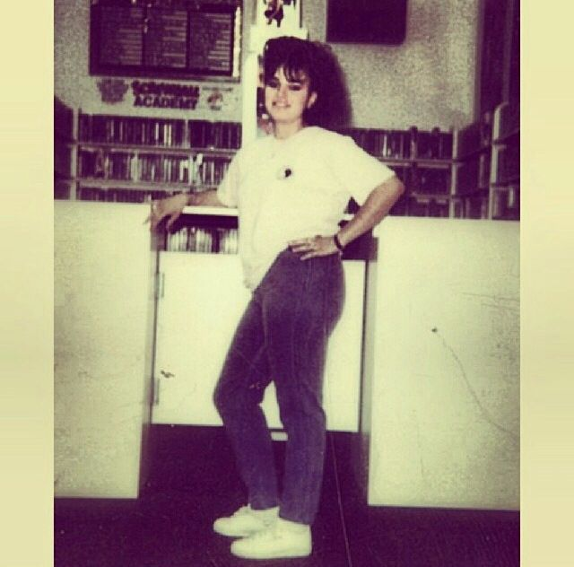
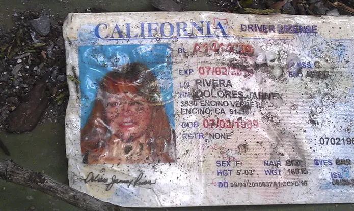
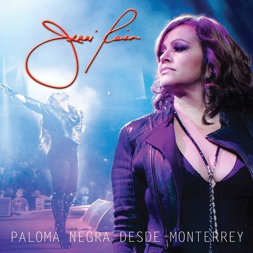

Rivera was born on July 2, 1969 and raised in Long Beach, California, to Rosa Saavedra and Pedro Rivera, both from Mexico.Her parents raised Rivera and her sister and four brothers in a tight-knit, musical household; her brother Lupillo is also a regional Mexican musician.Rivera spoke both English and Spanish fluently.Her family introduced her to traditional Mexican music, including the genres of banda, norteña, and ranchera.Rivera earned straight A's in school until her sophomore year, when at 15 she became pregnant with the first of her five children, Janney "Chiquis" Marín-Rivera.She supported the two of them by selling CDs at flea markets,while working toward her GED at a continuation school and graduating as class valedictorian.
Rivera was introduced to music in 1992 when she recorded as a Father's Day present to her father; she made more recordings and signed to Capitol/EMI's Latin division. Her first album, "Somos Rivera" ("We Are Rivera"), was released in 1992.At the onset of her musical career, she was told many times she would not make it. At that time and still today, the genre known as regional Mexican music was and is dominated by men. In a 2011 interview with Billboard magazine, she stated, "It was hard knocking on those doors to get my music played. One radio programmer in L.A., the meanest son of a bitch in the world, threw my CD in the trash right in my face." Those were the kind of issues Rivera faced as a female trying to crack the regional Mexican genre.She then released the albums La Maestra, Poco a Poco, Por Un Amor, La Chacalosa, and Adios a Selena independently, the latter a tribute album to Tejano music singer Selena, who was murdered in 1995.
Rivera died in an aircraft accident in the early hours of December 9, 2012, when the Learjet 25 she was travelling in with six other passengers crashed near Monterrey, Mexico. She was in the city to perform at Monterrey Arena the previous evening. After holding a press conference at the end of the show, she and four other staff and two pilots departed from Monterrey Airport at around 3:20am local time on December 9 to fly to Toluca, Mexico, for an appearance on La Voz... México. Around 15 minutes later, contact with the jet was lost, and later in the day its wreckage was found near Iturbide, Nuevo León. There were no survivors among the five passengers and two crew on board.
Dolores Janney " Jenni " Rivera Saavedra (July 2, 1969 – December 9, 2012) was an American singer known for her work within the Regional Mexican music genre, specifically in the styles of Banda, Mariachi and Norteño.
